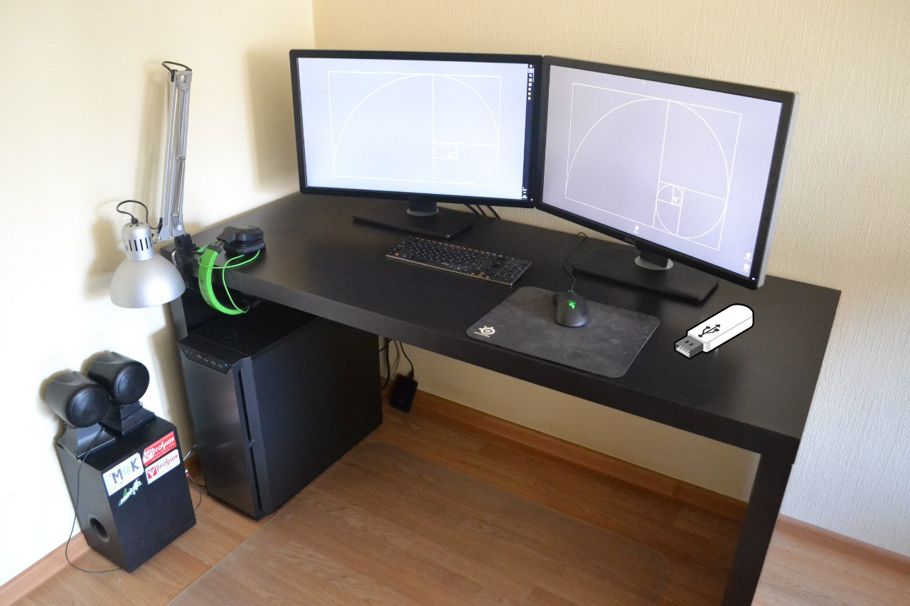

Устройства ПО
- Процессор
- Память:
- Оперативная
- Долговременная
- Жёсткий магнитный диск
- Дискета
- Флэш-память
- Лптические диски
- CD
- DVD
- Устройства ввода:
- Клавиатура
- Мышь
- Сканнер
- Граф. планшет
- Камера
- Джойстик
- Устройства вывода:
Определения
-
Компью́терная клавиату́ра — устройство, позволяющее пользователю вводить информацию в компьютер (устройство ввода). Представляет собой набор клавиш (кнопок), расположенных в определённом порядке.
-
Компью́терная мышь — координатное устройство для управления курсором и отдачи различных команд компьютеру. Управление курсором осуществляется путём перемещения мыши по поверхности стола или коврика для мыши.
-
Монитор — устройство оперативной визуальной связи пользователя с управляющим устройством и отображением данных, передаваемых с клавиатуры, мыши или центрального процессора.
-
Центра́льный проце́ссор (ЦП; также центра́льное проце́ссорное устро́йство — ЦПУ; англ. central processing unit, CPU, дословно — центральное обрабатывающее устройство, часто просто процессор) — электронный блок либо интегральная схема, исполняющая машинные инструкции (код программ), главная часть аппаратного обеспечения компьютера или программируемого логического контроллера. Иногда называют микропроцессором или просто процессором.
-
Оперативное запоминающее устройство (ОЗУ) — техническое устройство, реализующее функции оперативной памяти. ОЗУ может изготавливаться как отдельный внешний модуль или располагаться на одном кристалле с процессором, например, в однокристальных ЭВМ или однокристальных микроконтроллерах.
-
Постоя́нное запомина́ющее устро́йство (ПЗУ) — энергонезависимая память, используется для хранения массива неизменяемых данных.
-
Накопи́тель на жёстких магни́тных ди́сках, или НЖМД (англ. hard (magnetic) disk drive, HDD, HMDD), жёсткий диск, разг. винчестер — запоминающее устройство (устройство хранения информации, накопитель) произвольного доступа, основанное на принципе магнитной записи. Является основным накопителем данных в большинстве компьютеров.
-
Видеокарта – составная часть компьютера, функция которой заключается в том, чтобы перевести определенные данные, расположенные в памяти системы в доступное изображение.